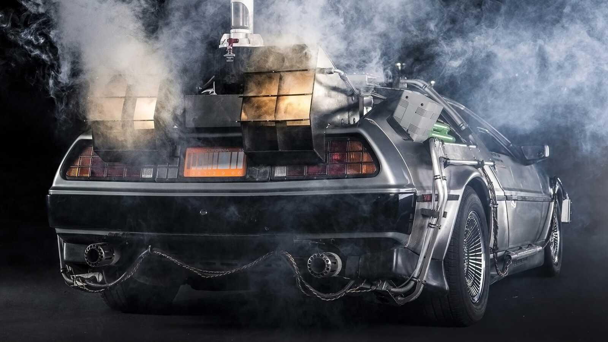

1985 DeLorean DMC-12
"Back to the Future" is a beloved and iconic science fiction film trilogy directed by Robert Zemeckis and
produced by Steven Spielberg. The trilogy consists of three films: "Back to the Future" (1985), "Back to the
Future Part II" (1989), and "Back to the Future Part III" (1990). Created by screenwriters Robert Zemeckis
and Bob Gale, the series seamlessly blends elements of science fiction, comedy, and adventure, resulting in
a timeless and universally acclaimed cinematic experience.
The first film introduces us to Marty McFly, played by Michael J. Fox, a teenager who accidentally travels
back in time to 1955 in a DeLorean time machine created by the eccentric Dr. Emmett Brown, portrayed by
Christopher Lloyd. Marty must navigate the challenges of the past, ensuring that his parents meet and fall
in love while finding a way back to his own time. The film's ingenious plot, witty dialogue, and memorable
characters, including the eccentric Doc Brown and the iconic DeLorean car, quickly turned it into a cultural
phenomenon.
"Back to the Future Part II" takes Marty and Doc to the future, specifically 2015, and explores the
consequences of altering the past. The film delves into intricate timelines, parallel universes, and the
potential dangers of meddling with time. With dazzling special effects and an intricate narrative, the
second installment expands on the themes introduced in the first film, leaving audiences eagerly
anticipating the conclusion of the trilogy.
In "Back to the Future Part III," Marty travels to the Old West to rescue Doc Brown, who has become stranded
in 1885. The film cleverly weaves together elements of the Western genre with time travel, providing a
satisfying and adventurous conclusion to the trilogy. The enduring friendship between Marty and Doc, the
humor woven throughout the series, and the thrilling time-traveling escapades contribute to the trilogy's
enduring popularity.
The "Back to the Future" trilogy has left an indelible mark on popular culture, influencing subsequent
films, TV shows, and even theme park attractions. The iconic DeLorean time machine, the Flux Capacitor, and
phrases like "Great Scott!" have become synonymous with the franchise. Beyond its entertainment value, the
trilogy explores themes of friendship, destiny, and the consequences of our actions, making it a timeless
and resonant cinematic experience for audiences of all ages. Whether it's the exhilarating time-travel
sequences, the humor, or the heartwarming moments, "Back to the Future" continues to captivate new
generations, ensuring its place as a cinematic classic.

DMC